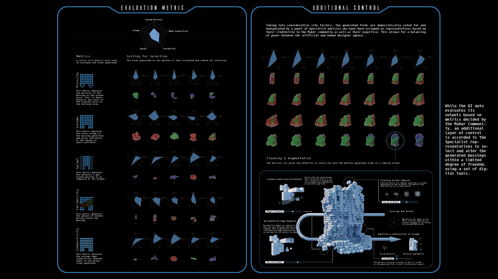
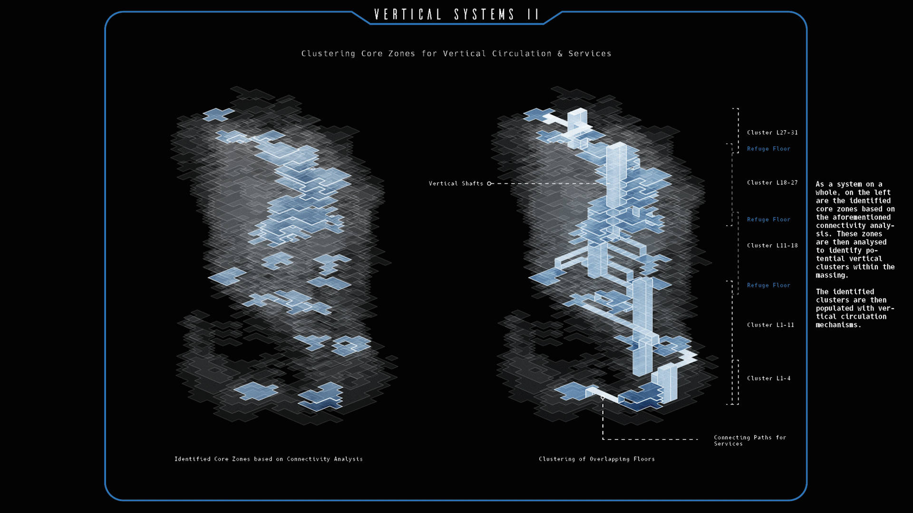
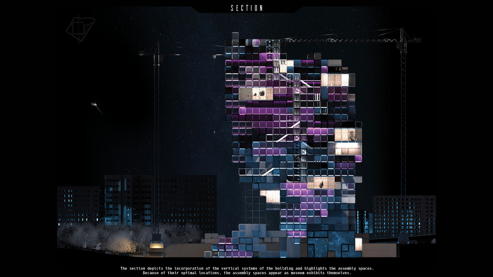

An Artificial Intelligent Architecture for Collective Design from 3D Data
Project Overview
The Makers Musuem is an exploration in rethinking the typology of a museum as more than just a repository of artifacts and gallery spaces but also a space for the act of creation.
Incorporating the use of Artificial Intelligence and working in tandem with Human stakeholders, the Museum is a product of Generative processes, Collective decisions and Specialist interventions.
With the intention of the Museum’s architecture as zeitgeist, the Museum reconfigures itself over time to suit the needs and desires of the age, through a series of modular components.
This too is a sustainability strategy by removing the need to demolish and make way for the new, to expand when demand increases, or shrink in scale when demand falls significantly in
an event such as a global pandemic, optimizing energy and resource consumption.
The thesis seeks to pose the question: Can Artificial Intelligence allow for more democratic collective design processes? What are the systems that would support such an Architecture?
About Me
Sheng Wei is an aspiring designer who is fascinated by the intersections between art, architecture and technology.
He believes that it is vital for architecture to be future-oriented and flexible while remaining rooted upon the lessons of the past;
and at each opportunity, to exercise a creative spirit that seeks to question, re-think and try the unconventional.
Name
Chia Sheng Wei
Mentor
Immanuel Koh
Typology
Museum, Makerspace
Site Location
Changi, Singapore
The mechanisms of the museum can be divided into five distinct processes.
Each process comprises sub-processes that facilitate the museum's reconfiguration.
Process Zero involves the collection of data from the Maker Collective. This is done via an application that
serves as a platform made accessible to the community, by the community and for the community.
Process One includes the collation of data for machine learning; followed by 3D form generation and selection.
As such user-generated data does not currently exist, data from Thingiverse,
the world's largest 3D file repository was used as a proxy for the research.

Process Two is the exploration of mechanisms and systems that make a reconfigurable
museum possible. It is also the translation of A.I generated forms to architectural space.
These mechanisms include the application of a modular frame system, vertical circulation networks, and robotic systems.

Process Three involves the usage of the museum and depicts its site dependencies as well as internal mechanisms of reorganisation.
The site at Changi is organized into zones that support the museums functions.
Reorganisation of the internal spatial layout is via a user-driven process which builds community discussions and a sense of ownership.

Process Four comprises the sequences executed in the reconfiguration of the museum.
The projected form is the result of a collective decision via majority vote, selected from the A.I-Human generative process,
and is the transition end-goal in a 2-year process.
While the Makers Museum may seem like a speculative reality today, the various computational, architectural and engineering technologies for the most part, already exist.
The thesis thus explored the implementations of such technology in allowing for more inclusive design processes
in the context of a reconfigurable museum; and the necessary supporting architectural and robotic systems,
while seeking to redefine the Museum and the Makerspace.
With greater advancements in technology, perhaps such a Museum, a product of Human and Artificial imagination,
may just be on the edge of tomorrow.


![]()
![]()
![]()